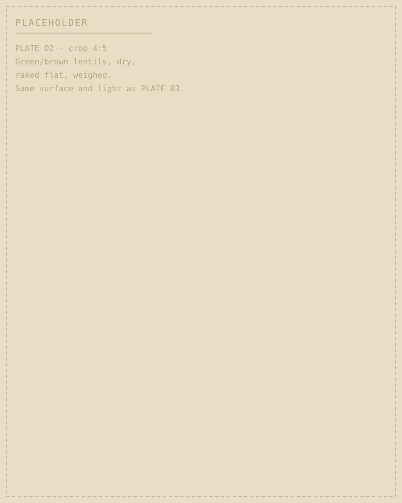
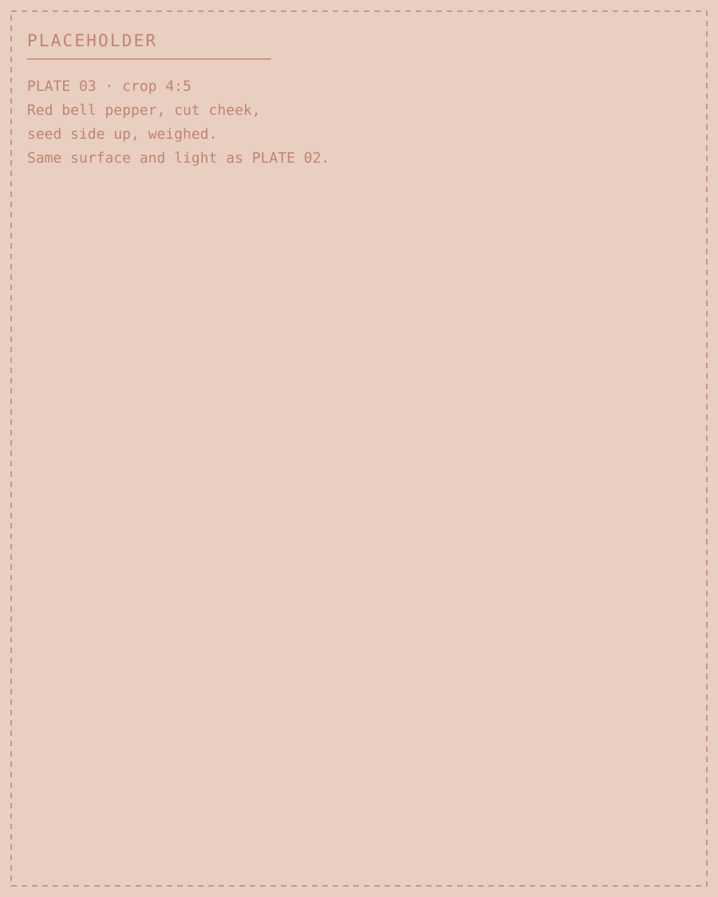
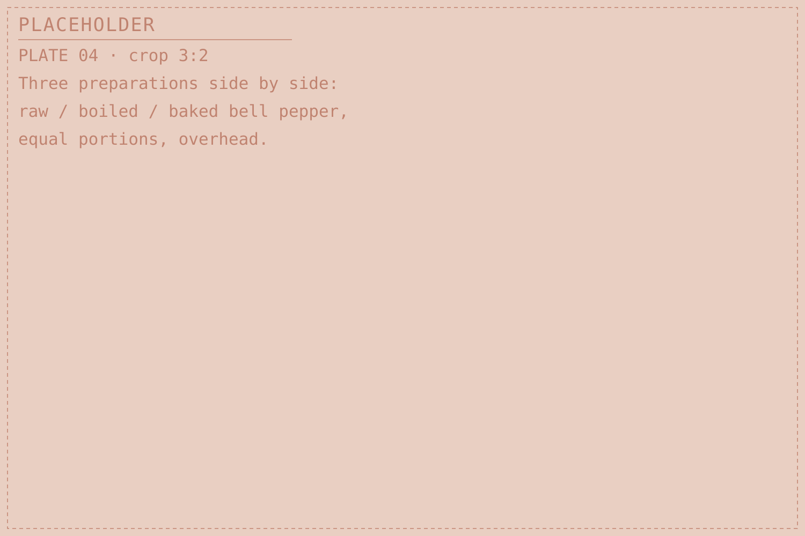

Pair 01
Lentils · Bell pepper
Iron · pH
Mərci + bolqar bibəri
Lentils + red bell pepper
Does red bell pepper change how much iron is released from lentils during digestion?
- Status
- This pairing is in preparation. No measurement from NUTRIX LAB is published on this page yet — everything below is either published research by others, clearly cited, or what this project plans to do.


§1 Ingredients
Why these two
Lentils carry iron in its non-heme form — the form found in plants, and the form whose uptake is most easily pushed up or down by whatever else is in the same meal. They also contain phytate, a storage compound in pulses and grains that binds minerals and tends to hold iron in place.
Red bell pepper is a notably concentrated source of ascorbic acid (vitamin C). Ascorbic acid is the best-documented dietary enhancer of non-heme iron uptake, and it is also fragile: it degrades with heat and leaches into cooking water.
So the pair sets two known chemistries against each other in a dish people actually eat, and it makes preparation method part of the question rather than a footnote to it.
§2 Method
Preparation to be compared
Each variant is prepared the same way every time it is run, so the only thing changing between them is how the pepper met heat and water. Exact quantities, timings and temperatures are fixed in the written protocol and published with it.
Table scrolls sideways →
| Variant | Bell pepper | Lentils | Why it is in the set |
|---|---|---|---|
| A | Raw, diced | Boiled | Ascorbic acid at its highest. The upper bound for any effect. |
| B | Boiled with the lentils | Boiled | Closest to a cooked dish. Heat and leaching into the water both act. |
| C | Baked, dry heat | Boiled | Heat without leaching, separating the two losses. |
| D | None | Boiled | Lentils alone — the reference every variant is compared against. |

§3 Evidence
Evidence
Nothing published here yet for this pairing. When there is, it appears in this block and nowhere else on the page, with the run date, the number of repeats and the raw data alongside it.
Ascorbic acid raises non-heme iron absorption in single meals
Human single-meal studies show ascorbic acid increasing non-heme iron absorption, with the effect increasing as the dose rises and working against phytate's inhibition.[1] These were controlled test meals, not lentils with bell pepper.
Over a whole diet, the picture is less clear
When ascorbic acid intake was raised across a complete diet rather than a single test meal, iron absorption did not change significantly.[2] A single-meal enhancement does not automatically carry over to how people eat across a day — one reason this pairing is worth measuring rather than assuming.
Phytate in pulses works in the opposite direction
Reducing phytate in cereal porridges improved iron absorption in human subjects, confirming phytate as a substantial inhibitor of non-heme iron uptake.[3] Lentils contain phytate, so the two chemistries in this pairing pull against each other.
What the digestion model measures
The standardised static in-vitro digestion protocol used in this field produces a bioaccessible fraction — how much is released into solution under controlled conditions.[4] It is a comparison tool between samples, not a measurement of what a person absorbs.
- Iron bioaccessibility across variants A–D, so the effect of raw, boiled and baked pepper can be separated.
- pH of the combined matrix before and through simulated digestion.
- Repeats of each variant, with the number reported alongside the result rather than left implied.
We did not find published work measuring this specific pairing, at household proportions, across these preparation methods. That gap is the reason it is Pair 01.
§4 Limits
What a result here would, and would not, mean
A difference in bioaccessible iron between variants would mean the combination changed how much iron was released under these laboratory conditions. It would be a reason to look further.
It would not mean anyone absorbed more iron, that iron status improved, or that one lunch is healthier than another. Those are claims about people, and they need research on people — with ethical approval, consent and a suitable research partner.
§5 Cost
Cost
Table scrolls sideways →
| Ingredient | Price (AZN) | Shop | Date priced |
|---|---|---|---|
| Mərci | — | — | — |
| Bolqar bibəri | — | — | — |
Prices are collected in shops, photographed, and published with the shop name and the date. Nothing is estimated.
§6 Sources
Sources
- Hallberg L, Brune M, Rossander L. Iron absorption in man: ascorbic acid and dose-dependent inhibition by phytate. The American Journal of Clinical Nutrition, 1989.
- Cook JD, Reddy MB. Effect of ascorbic acid intake on nonheme-iron absorption from a complete diet. The American Journal of Clinical Nutrition, 2001.
- Hurrell RF, Reddy MB, Juillerat MA, Cook JD. Degradation of phytic acid in cereal porridges improves iron absorption by human subjects. The American Journal of Clinical Nutrition, 2003.
- Brodkorb A, Egger L, Alminger M, et al. INFOGEST static in vitro simulation of gastrointestinal food digestion. Nature Protocols, 2019.
Volume, page numbers and DOI links are to be added by the project team after checking each reference against the original article.